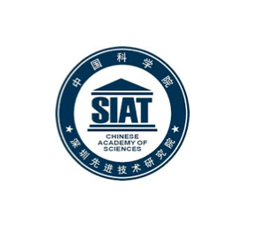
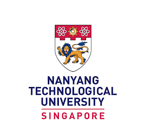

Recent News
About Us
XPixel (/eks-ˈpɪksəl/) group is established with a primary focus on tackling low-level vision problems, including but not limited to image/video super-resolution, denoising, deblurring etc. We strive to examine images and video footages across all pixels. Our members comprises researchers, students and academics, coming from Shanghai AI Lab, SIAT (Shenzhen), CUHK (Hong Kong), NTU (Singapore), UM (Macao), Tencent and SenseTime. We devote ourselves to research and develop on low-level vision problems, aiming to translate the outcome of our work into solving real-world obstacles.
XPixel Metaverse

XPixel Metaverse is the wisdom fruit of the whole XPixel Group. It represents our perseverance to research, our taste of art, our enthusiasm for life, and our responsibility to the world. XPixel Metaverse not only records our glorious history, but also previews our brighter future. Welcome excellent scholars from all over the world to work together for a clearer and better world! Click here to read more details.
Latest Publications

Collaboration
SIAT
SIAT aims to enhance the innovative capacity of the equipment manufacturing and service industries in the Guangdong-Hong Kong region, promote the development of emerging industries possessing their own proprietary intellectual property, and become a world-class industrial research institute.
CUHK
The CUHK Multimedia Lab (MMLab) is one of the pioneering institutes on deep learning. In GPU Technology Conference (GTC) 2016, a world-wide technology summit, MMlab is recognized as one of the top ten AI pioneers, and listed together with top research groups in the world (e.g. MIT, Stanford, Berkeley, and Univ. of Toronto). Today, it remains one of the most active research labs in computer vision and deep learning, publishing over 40 papers on top conferences (CVPR/ICCV/ECCV/NIPS) every year.
SenseTime Inc.
SenseTime is a global company focused on developing innovative AI technologies that positively contribute to economies, society and humanity. With roots in the academic world, SenseTime invest in fundamental research to further understanding and advance the state of art in AI technology. SenseTime is a global team of talented individuals with over half dedicated to research and development activities. This has made it a leading global AI algorithm provider and one of the most prolific contributors of related papers in the research community.
NTU
The Nanyang Technological University is the second oldest public autonomous research university in Singapore. With a population of 33,500 students and 10,000 faculty and staff, NTU is the second largest university in Singapore.